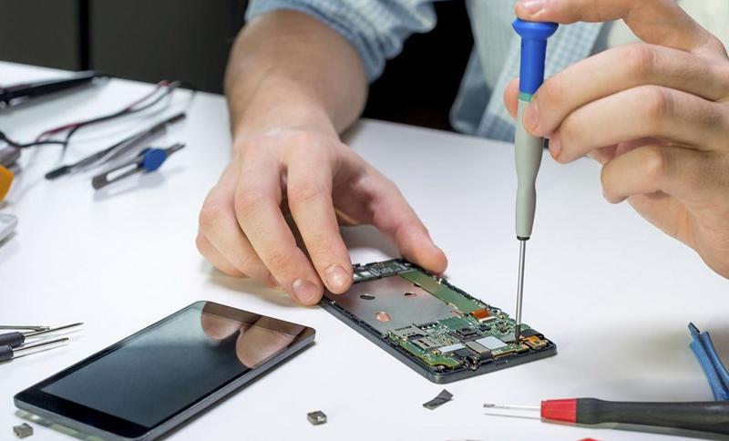

Misión
Buscamos promover nuestros servicios de reparación de electrónicos y eléctricos con el fin de ayudar a la comunidad a evitar “gastos excesivos” o “gastos innecesarios”. Brindamos nuestro servicio de reparación de dispositivos electrónicos o negocios y clientes que lo necesitan a un precio más sustentable y adaptable para nuestros clientes. Buscamos proponer planes de reciclaje para fomentar la sustentabilidad ambiental.
Visión
Vemos a futuro que el negocio sea rentable y accesible para los clientes, trabajaremos en conjunto para crear software y hardware propios sin olvidar que nuestro enfoque, nuestro objetivo principal es la reparación de dispositivos electrónicos. Buscamos reconocimiento por la “calidad” de nuestros servicios en desarrollo de software y reparación de hardware.
Valores
Puntualidad, compromiso y honestidad al momento de realizar un servicio a un cliente completando el objetivo con la finalidad correcta demostrando así los valores que nos caracterizan como negocio.
Ventajas Competitivas
Nuestro servicio triunfará en el mercado debido a la fácil accesibilidad en el bajo costo y la calidad que brindamos a nuestro cliente.
Compromiso
En un principio, la idea era todo el motivo de inversión. Somos un equipo de técnicos en informática que sabe programar en distintos idiomas y reparar dispositivos electrónicos, nos dedicamos de 4 a 8 horas diarias para implementar y promover nuestro servicio.
Competencias
Somos inexpertos en el mercado; sin embargo, somos conscientes de que nuestros servicios son de una actividad terciaria con fines de ayudar a los clientes equilibrando sus gastos y economía. El mercado es complejo y muy competitivo, así que deberemos avanzar tecnológicamente.
Carácter
No nos consideramos preparados para el riesgo del negocio, pero tenemos una política de servicio al cliente bien implementada, pues garantizamos que nuestro servicio funciona y cubre las necesidades del cliente. El producto va dirigido hacia cualquiera que posea un dispositivo electrónico. Para el cliente, nuestro servicio representará un apoyo para su economía y representará un sentimiento de confianza, pues estará en manos de profesionales buscando la satisfacción del cliente.